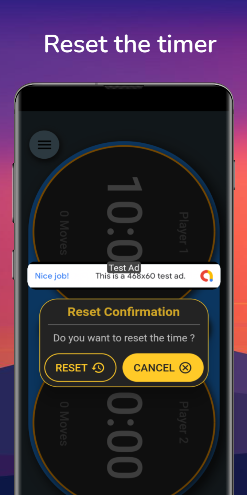
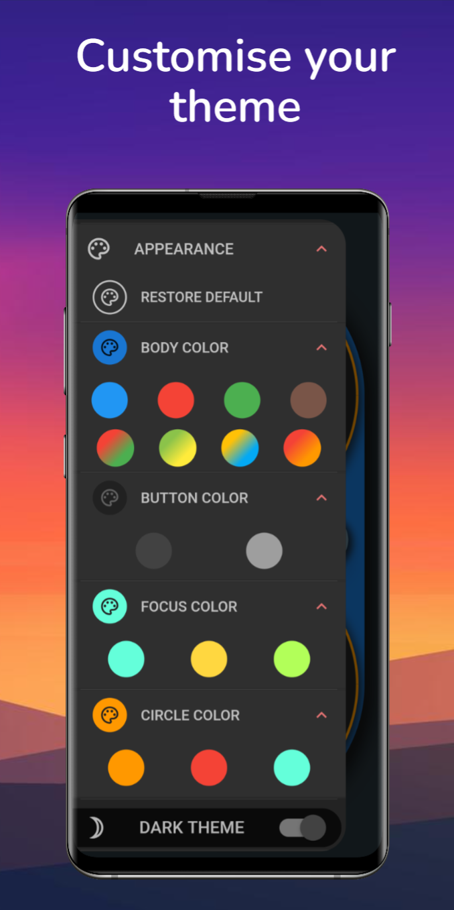
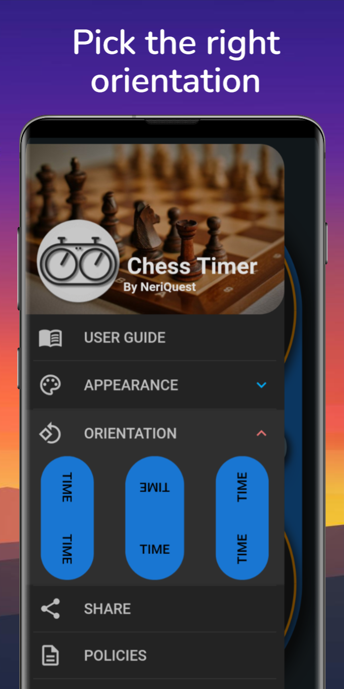

Tournament Precision.
Tactile Digital Clock.
Engineered for blitz, bullet, rapid, and tournament classical chess. High-contrast dual touch surfaces, customizable Fischer increments, acoustic timing alerts, and AMOLED battery conservation.
Live Dual-Player Chess Clock
Tap either clock face to switch turns. Long-press anywhere to pause both clocks.
Built for Club, Park & Tournament Chess
Every millisecond counts. Designed to give players instant visual clarity, rock-solid stability, and distraction-free operation.
Fischer & Delay Increments
Support for standard Fischer increments (+1s, +2s, +5s, +10s) and Bronstein delays. Time is accurately added the exact millisecond a player finishes their move.
Oversized Tactile Tap Zones
Generous, full-screen touch surfaces designed for blind peripheral reach during intense blitz scrambles. No miss-clicks, no fiddly buttons.
Dynamic Circular Progress
Glanceable circular progress rings visually drain in real-time, letting players assess their remaining time ratio instantly without reading numbers.
Long-Press Universal Pause
Prevents accidental pauses during fast-paced play. Players must intentionally hold the clock display for a sustained duration to pause the match.
Acoustic Pluck & Ticker Cues
Crisp acoustic turn switches, subtle ticking under 10 seconds of time trouble, and a distinctive time-forfeit buzzer. Vibration feedback ensures silent play when needed.
True AMOLED Battery Conservation
Engineered with pitch-black #000000 pixel shutoff to ensure your phone's battery easily outlasts 6-round over-the-board weekend tournaments.
Clean, Modern Interface
Experience an interface meticulously refined for distraction-free tournament play.







Frequently Asked Questions
Everything you need to know about setting up, playing, and mastering your matches with ChessTimer.
To avoid accidental touches during blitz and rapid time trouble, ChessTimer uses a tournament-safe long-press mechanism. Simply press and hold anywhere on the clock display for 0.6 seconds. A confirmation toast will pop up, and the status bar will show "Game Paused". Tap the resume button or clock face to continue playing.
Under Fischer increment mode, whenever a player completes a move and taps the screen, the preset increment time (e.g., +2s, +5s, +10s) is automatically credited back to their remaining clock bank. In delay mode, the countdown is paused for the delay period before subtracting seconds.
Yes. Tap on the Settings icon before starting a game to customize player names, assign handles, or swap who starts with White or Black pieces.
ChessTimer includes instant 1-tap presets for Bullet (1|0, 1|1, 2|1), Blitz (3|0, 3|2, 5|0, 5|5), Rapid (10|0, 10|5, 15|10), and Classical (30|0). You can also configure any custom minutes, seconds, and bonus increments down to the exact second.
Yes! By default or via the Face-to-Face toggle, Player 1's timer is rotated 180 degrees. When you place your smartphone or tablet flat on the table next to the board, both opponents see their clock perfectly right-side up from their respective chair.
ChessTimer features crisp wooden pluck sounds on every tap, ticking warning audio when under 10 seconds of time trouble, and a distinctive forfeit buzz on 00:00. In quiet tournament halls, you can mute audio and rely entirely on tactile haptic vibration.
Never. The app holds a system wake-lock while a match is in progress or paused, guaranteeing your screen stays illuminated and ready for touch without needing to unlock your phone.
No. ChessTimer operates 100% locally on your device. It requests zero invasive permissions, operates flawlessly in airplane mode, and never collects or transmits your personal data.
The moment a player's clock reaches 00:00, the clock border glows bright red, the timer halts immediately, a forfeit buzzer sounds, and the opponent is declared winner on time.